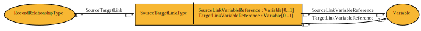

SourceTargetLinkType¶
Contains a set of variables, one from the source record and one from the target record used as all or part of a link between the source and target records.
Contents
Relationships¶

Properties¶
SourceLinkVariableReference¶
- Type
- Variable
- Cardinality
- 0..1
A reference to the variable in the Source Record containing the value that is equal to the value in the identified variable in the Target Record.
TargetLinkVariableReference¶
- Type
- Variable
- Cardinality
- 0..1
A reference to the variable in the Target Record containing the value that is equal to the value in the identified variable in the Source Record.